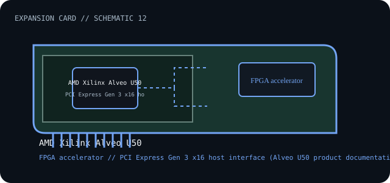

[ INDIVIDUAL COMPONENT // EXPANSION CARDS ]
AMD Xilinx Alveo U50
Data-center FPGA accelerator card in a passive, low-profile PCIe form factor. This is a model-specific catalog entry; confirm the exact label and revision before use.

IDENTIFICATION: Match the full model/part number and board revision to the label. Port and bus information below is included only where the linked manufacturer or standards documentation supports it; revisions and platform support may differ.
Specifications and service checks
| Catalog subcategory | Compute accelerators |
|---|---|
| Exact model / part identifier | Alveo U50 (verify assembly SKU printed on card) |
| Bus / host interface | PCI Express Gen 3 x16 host interface (Alveo U50 product documentation) |
| Verified interfaces / protocols | FPGA accelerator with 8 GB HBM2 on-card memory per AMD product documentation; no standard external host I/O ports are specified for the base card. |
| OS / driver / firmware caveat | Deployment requires compatible Alveo platform software, XRT/driver, shell/firmware image, and supported server configuration. Match the shell and card revision; do not load an image built for another Alveo SKU. |
| Service note | Record the board assembly code and shell/firmware image before service. Ensure server airflow meets the passive-card requirement and confirm supported platform PCIe wiring and power before insertion. |
Installation and archival notes
- Record the board model, revision, serial/date code, firmware, bracket, accessories, and the documentation revision used to identify the unit.
- Confirm the host slot's electrical wiring/keying, required power, supported OS/driver, and any platform or option-ROM restriction in the cited model documentation.
- Use ESD precautions. Do not infer pinout, compatibility, protocol, boot support, or revision equivalence from a similar connector or product-family name.
Record the board assembly code and shell/firmware image before service. Ensure server airflow meets the passive-card requirement and confirm supported platform PCIe wiring and power before insertion.
Model-specific sources
- AMD — Alveo U50 accelerator cardProduct identity, card interface, memory and platform-specific deployment details.
- AMD — Alveo U50 documentation resourcesModel-specific installation, thermal, shell, firmware and software requirements.
Source links are selected for this exact model or its manufacturer-documented family. Review the source revision and your card's printed identifiers before service.